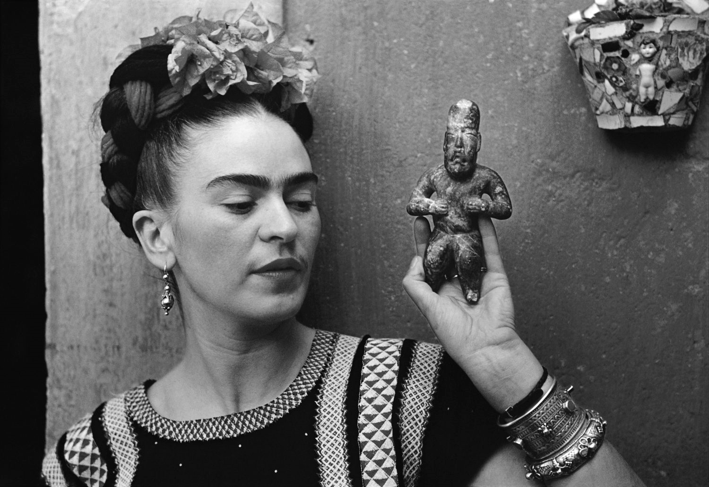

Frida Kahlo

Frida Kahlo was born on July 6, 1907 in the house of her parents, known as La Casa Azul (The Blue House), in Coyoacan. However, she always
claimed to be born on 1910, the year of the outbreak of the Mexican revolution, so that people could directly associate her with the modern Mexico.
This detail well introduces us to a singular personality, characterized since her childhood by a deep sense of independence and rebellion against ordinary social
and moral habits, moved by passion and sensuality, proud of her "Mexicanidad" and cultural tradition set against the reigning Americanization: everything mixed
with a peculiar sense of humour.
Her life was marked by physical suffering, started with the polio contracted at the age of five and worsen by her life-dominating event occurred in 1925.
A bus accident caused severe injuries to her body owing to a pole that pierced her from the stomach to the pelvis. The medicine of her time tortured her body
with surgical operations (32 throughout her life), corsets of different kinds and mechanical "stretching" systems. Lots of her works were painted laying in the bed.
Drawing on personal experiences, her miscarriages, and her numerous operations, Kahlo's works are often characterized by portrayals of pain. Of her 143 paintings,
55 are self-portraits which often incorporate symbolic portrayals of physical and psychological wounds.
See some of their artwork below, click on the images to enlarge them in a new window.